|
|
HELP FIND THE FOLLOWING WELSH LOCATIONS
PAGE 29
THE
PERSUADERS!:The Man in the
Middle (Leslie
Norman: 1971)
Sygyn-Bâch, 0.5km east of Pont-y-Felin, Beddgelert, Gwynedd, Wales – The cottage
where the secrets are to be traded.
(Identified by Sietse Postma, April 2022)

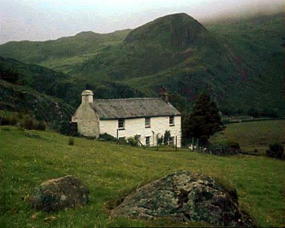
Unnamed road half-way between Bryn Dinas and Nantmore Mountain Centre, Gelli Iago, Nantgwynant, Gwynedd, Wales – Archie is
whisked away after
being traded.
(Identified by Sietse Postma, April 2022)
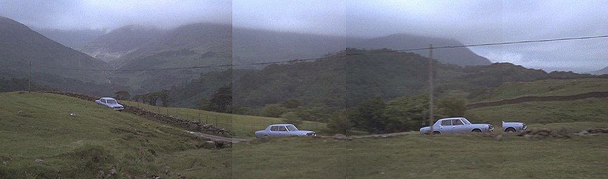
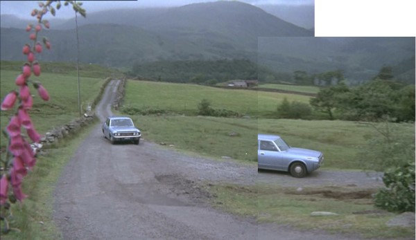
THE
PERSUADERS!: Five Miles To Midnight (Val Guest: 1970)
Sidonie and Frank Rocco
look up towards the border towards which they are walking.

THE SAINT: The Golden Journey (Robert S. Baker, October 1962)
Unknown
1 – Nearly at the
end of their journey Belinda goes for a swim in the sea.
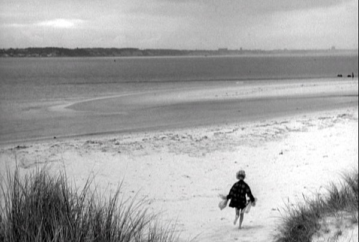
 This looks
more like The Wirral than Wales.
Certainly those are big buildings in the distance.
This looks
more like The Wirral than Wales.
Certainly those are big buildings in the distance.
Unknown 2 – Nearly at the end of their journey Belinda and Simon arrive at the coast.
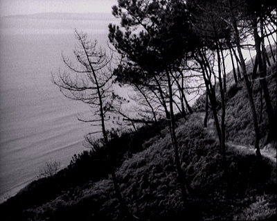
THE SAINT: Teresa (Roy Baker: 1963)
Unknown
1 - Simon’s breaks
fail as he drives Teresa through Mexico.
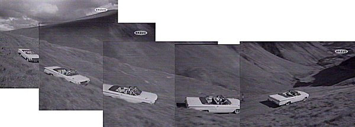
Unknown 2 - Simon’s breaks fail as he drives Teresa through Mexico.
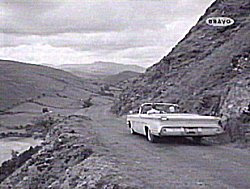
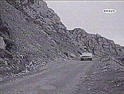
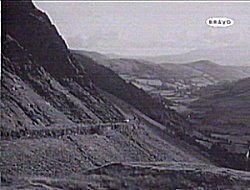
 Previous
shot of Bwlch
y Groes to Dinas Mawddwy so is this the road from Bala
to Llanymawddwy/Llyn Vyrnwy?
Previous
shot of Bwlch
y Groes to Dinas Mawddwy so is this the road from Bala
to Llanymawddwy/Llyn Vyrnwy?
DANGER MAN: An Affair of State (Peter Graham Scott: ??)
In San
Pablo,
Ortz dumps the body of Arthur Winfield into the sea.
He is observed by a police officer.
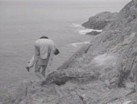
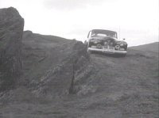
 Could be
Pembrokeshire coast. Already locations have been identified at Stackpole
Quay, St Govan's Head and Manorbier.
Could be
Pembrokeshire coast. Already locations have been identified at Stackpole
Quay, St Govan's Head and Manorbier.
 Chapman’s
Pool, Isle of Purbeck, Dorset
Chapman’s
Pool, Isle of Purbeck, Dorset
Think you know a spot? Need a bigger image? Email me.
< Previous | Index | Avengerland | Next >
Copyright © 2012 Anthony R. McKay